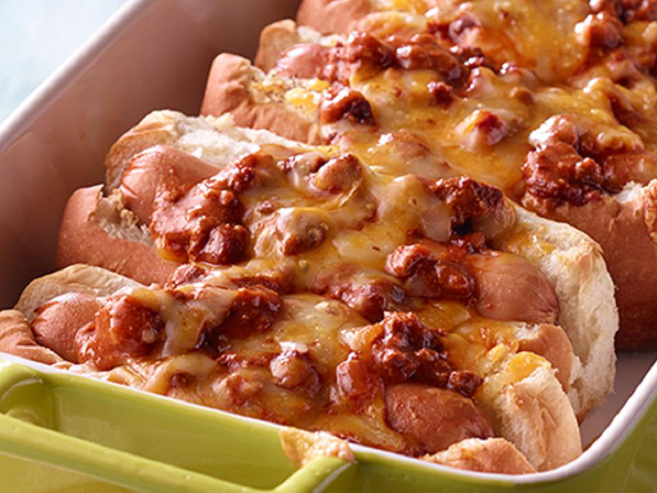

Baked Chili Hot Dogs

Finished Baked Chili Hot Dogs
Description
Below you will see the directions on how to make baked chili hot dogs.
Recipe by Hormel Chilir
Ingredients
- 6 hot dogs
- 6 split hot dog buns
- 1 (15 ounce) can HORMEL® Chili With Beans
- 10 egg roll wrappers
- 11 cup shredded Cheddar cheese
Steps
- Step 1: Heat oven to 350 degrees F. Grease 9 x 13-inch baking dish.
- Step 2: PHeat hot dogs according to package directions. Arrange hot dog buns in baking dish, cut side up. Place hot dogs in buns. Top with chili. Sprinkle with cheese. Tent pan with foil.
- Step 3: Bake 15 to 20 minutes or until hot and cheese is melted.